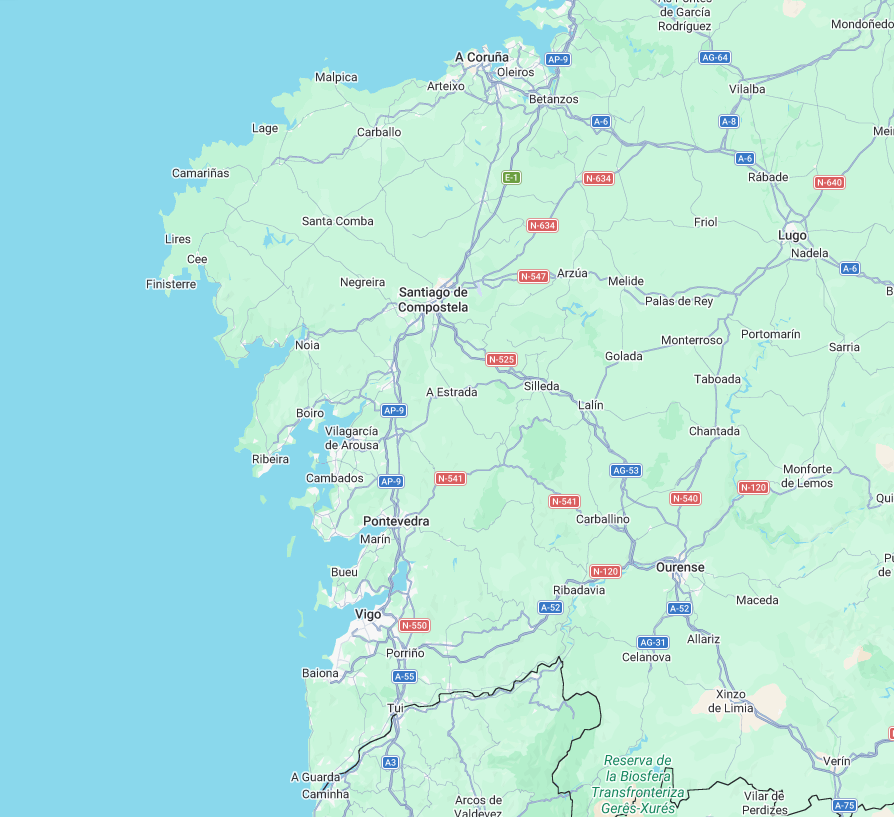

GUARDA LA FECHA
PRÓXIMAS
FIESTAS
QUÉ ES MONOCROMATICS
UNA NOCHE.
UN ESPACIO.
MUCHA MÚSICA.
Blablablabla; Qué es Monocromatics. Qué estilo de música tiene. Qué busca la fiesta. Un poco de historia y origen.
DJs RESIDENTES
QUIÉNES ESTÁN
DETRÁS DE LA MÚSICA
ARTISTAS INVITADOS
ARTISTAS QUE PASARON
POR MONOCROMATICS
ASÍ LO HEMOS VIVIDO
FIESTAS ANTERIORES
NUESTRO PÚBLICO
GALERÍA


NUESTRAS UBICACIONES
¿EN QUÉ SALA
NOS VISTE?
Descubre las salas y ciudades por las que ha pasado Monocromatics.
